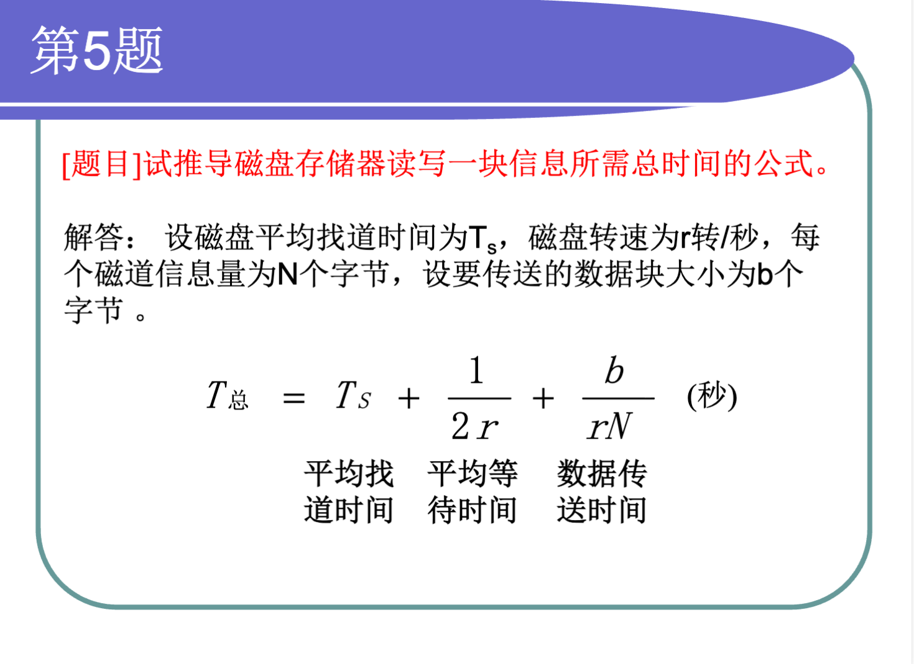
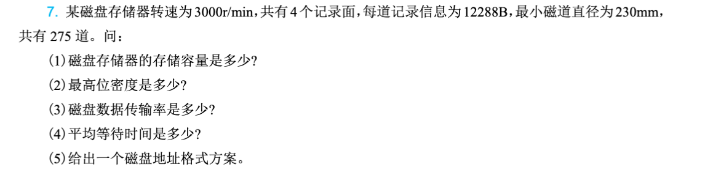
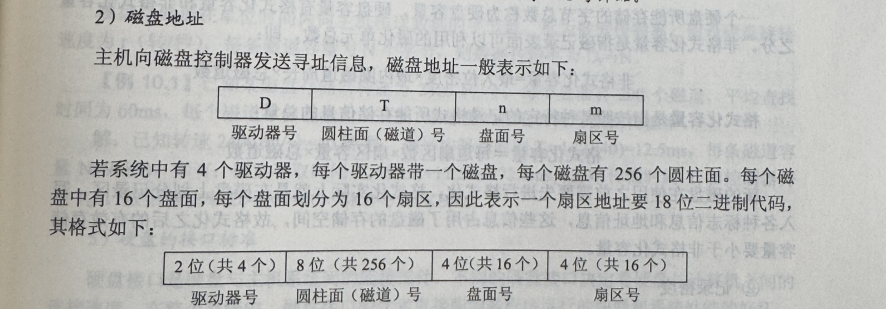
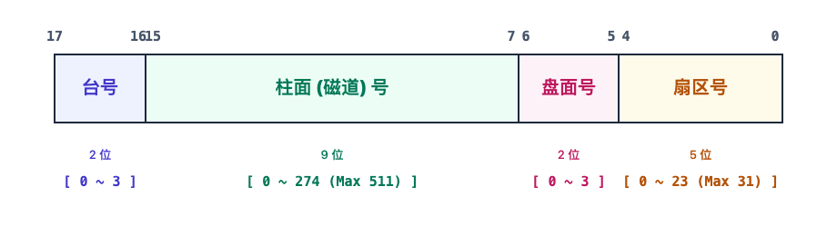
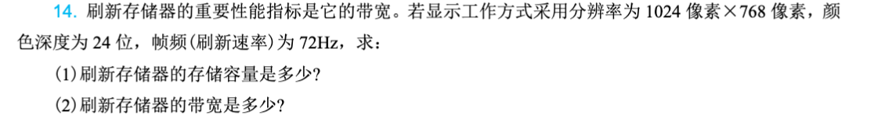

第7章：外围设备
Note
外围设备（Peripheral Equipment）是计算机系统的重要组成部分，负责与外部世界进行数据交互。本章主要介绍常见的输入设备、输出设备以及外存储器的原理和特点，帮助读者全面了解计算机系统的外围设备技术。
本章要点：
- 输入设备的类型与工作原理
- 输出设备的类型与工作原理
- 硬盘存储器的结构与原理
- 固态存储技术
- 光盘与新型存储技术
7.1 概述
7.1.1 外围设备的作用
外围设备是计算机系统与外部世界交互的桥梁。虽然CPU和内存是计算机的核心，但如果没有外围设备，计算机将无法获取外界信息，也无法将处理结果呈现给用户。
可以将计算机系统想象成一个人：CPU是大脑，负责思考和计算；内存是记忆，负责临时存储信息；而外围设备就是人的感官（输入设备）和表达方式（输出设备），以及记录文字的本子（外存储器）。
7.1.2 外围设备的分类
1. 输入设备
输入设备将外部信息转换为计算机能够处理的数字信号。常见的输入设备包括：
- 键盘：最传统的文本输入设备
- 鼠标：图形界面操作的主要设备
- 触摸屏：直观的交互设备
- 扫描仪：将纸质文档转换为数字图像
- 麦克风：将声音转换为数字信号
2. 输出设备
输出设备将计算机处理后的信息转换为人类能够感知的形式。常见的输出设备包括：
- 显示器：将数字信号转换为视觉图像
- 打印机：将数字文档打印到纸张上
- 扬声器：将数字音频信号转换为声音
3. 外存储器
外存储器用于永久存储大量数据，即使断电也不会丢失数据。常见的外存储器包括：
- 硬盘驱动器（HDD）
- 固态硬盘（SSD）
- 光盘（CD、DVD、蓝光光盘）
- 磁带
- U盘和存储卡
7.1.3 外围设备的发展趋势
1. 智能化
现代外围设备越来越多地内置智能控制器，能够独立完成部分处理工作，减轻主机负担。例如，智能打印机可以独立完成图像处理和色彩管理。
2. 高速化
数据传输接口不断升级，从早期的并口、串口发展到USB、Thunderbolt等高速接口，大大提升了数据传输速度。
3. 小型化与便携化
移动设备的发展推动了外围设备的小型化，U盘、无线鼠标、移动硬盘等便携设备越来越普及。
4. 多功能整合
单一设备集成多种功能成为趋势，如多功能一体机集合了打印、复印、扫描功能。
7.2 输入设备
7.2.1 键盘
键盘是最基本也是最重要的输入设备，负责将用户的按键操作转换为计算机能够识别的电信号。
1. 键盘的工作原理
键盘内部有一个由行线和列线组成的矩阵电路。每个按键位于某一行和某一列的交叉点。当按下某个按键时，对应的行线和列线被连通，键盘控制器检测到这个连通事件后，通过扫描确定具体位置，并将按键编码通过接口发送给计算机。
键盘的工作过程可以想象成一个二维坐标系统：行就像X轴，列就像Y轴。当按下某个键时，相当于确定了坐标（行号，列号），控制器查找这个坐标对应的字符编码并发送出去。
2. 键盘接口
- PS/2接口：早期的键盘接口，现在较少使用
- USB接口：现代计算机的标准接口，支持热插拔
- 蓝牙：无线键盘使用的连接方式
3. 键盘类型
- 机械键盘：每个按键使用独立的机械开关，寿命长，手感好
- 薄膜键盘：按键通过按压薄膜电路接触，造价低，但手感较差
- 电容键盘：利用电容变化检测按键，寿命极长，手感出色
7.2.2 鼠标
鼠标是图形用户界面的主要操作工具，通过移动光标和点击操作来控制计算机。
1. 鼠标的工作原理
机械鼠标：底部有一个滚球，移动时滚球带动两个相互垂直的轴转动，轴上的编码盘转动产生脉冲信号，通过计算脉冲数量和方向确定移动距离。
光电鼠标：使用发光二极管照射鼠标垫表面，通过检测表面反射光的变化来计算移动方向和距离。高端光电鼠标使用激光技术，更加精确。
2. 鼠标的性能指标
- 分辨率（DPI）：每英寸对应的像素数，DPI越高移动越精确
- 采样率：每秒报告位置的次数，通常以Hz为单位
- 加速度：鼠标移动速度与光标移动速度的比例关系
3. 鼠标接口
- USB接口：现代鼠标的标准接口
- 蓝牙：无线鼠标的常用连接方式
- PS/2：早期接口，已基本淘汰
7.2.3 触摸屏
触摸屏是一种直观的输入设备，用户直接在屏幕上进行触摸操作来控制计算机。
1. 触摸屏的类型
电阻式触摸屏：由两层透明导电薄膜组成，中间有绝缘点。触摸时两层薄膜接触，形成电信号，通过检测接触位置确定触摸点。优点是成本低、可使用任何物体触摸，缺点是透光率低、硬度有限。
电容式触摸屏：利用人体电场产生的电容变化来检测触摸位置。当手指接触屏幕时，会改变触点处的电容值，控制器检测这个变化并计算触摸位置。优点是透光率高、支持多点触控，缺点是需要导体触摸。
红外式触摸屏：在屏幕边缘安装红外发射管和接收管，形成红外线网格。手指遮挡红外线时，通过被遮挡的光束位置确定触摸点。优点是寿命长、可做大尺寸，缺点是易受干扰。
表面声波触摸屏：利用超声波在玻璃表面的传播特性，触摸时吸收部分声波，通过检测吸收位置确定触摸点。精度高、透光好，但成本较高。
2. 多点触控
现代触摸屏支持多点触控，可以同时检测多个手指的触摸位置和动作。手势识别技术使得缩放、旋转、滑动等操作成为可能。
7.2.4 其他输入设备
1. 扫描仪
扫描仪将纸质文档、照片或实物转换为数字图像。主要技术指标包括：
- 光学分辨率：每英寸的像素数，如300dpi、600dpi
- 色彩深度：表示颜色的位数，如24位真彩色、48位色深
- 扫描速度：每页所需时间
工作原理：扫描仪使用光源照射文档，反射光通过光学系统聚焦到CCD（电荷耦合器件）或CIS（接触式图像传感器）上，将光信号转换为电信号，再经过模数转换变成数字图像。
2. 数码相机
数码相机使用图像传感器（CCD或CMOS）将光学图像转换为数字信号。关键参数包括：
- 像素数：传感器的像素总数
- 传感器尺寸：对角线长度，越大画质越好
- ISO感光度：传感器对光的敏感程度
- 光学变焦：镜头物理变焦倍数
3. 麦克风
麦克风将声音信号转换为电信号，再通过模数转换变成数字信号。主要类型包括：
- 动圈式麦克风：结构简单、耐用，频响特性好
- 电容式麦克风：灵敏度高、频响宽
- 驻极体麦克风：体积小、成本低，广泛应用于手机和电脑
7.3 输出设备
7.3.1 显示器
显示器是将数字信号转换为人眼可见图像的输出设备，是计算机最重要的输出设备之一。
1. 显示系统的组成
显示系统由显示器和显示适配器（显卡）组成。显卡负责将计算机内部的数字信号转换为显示器能够识别的信号，显示器负责将电信号转换为光图像。
2. 显示器的工作原理
CRT显示器（阴极射线管）：使用电子枪发射电子束，轰击荧光屏发光。每个像素点由红、绿、蓝三种荧光粉构成，电子束按顺序逐点扫描整个屏幕，通过控制电子束的强度来控制每个像素的亮度。
工作原理类似于在一张纸上用笔画画：电子枪就像笔，荧光屏就像纸，不同的是电子束每秒钟要重复扫描整个屏幕几十次，形成稳定的图像。
LCD显示器（液晶显示器）：利用液晶分子在电场作用下的排列变化来控制光线通过。屏幕由大量液晶像素组成，每个像素后面有背光源，前面有彩色滤光片。通过控制每个像素液晶分子的排列，可以调节该像素的亮度和颜色。
LED显示器：实质上也是液晶显示器，但使用LED作为背光源。相比传统CCFL背光，LED更节能、寿命更长、色域更广。
OLED显示器：采用有机发光材料，每个像素自发光的显示器。不需要背光源，因此可以做得更薄、对比度更高、可视角度更大。
3. 显示器的主要参数
- 分辨率：屏幕上像素的数量，如1920×1080、3840×2160（4K）
- 像素间距：相邻像素中心的距离，越小越清晰
- 刷新率：每秒钟画面更新次数，如60Hz、144Hz
- 响应时间：像素从一种颜色变换到另一种颜色所需时间，越小越好
- 对比度：最亮与最暗的亮度比值
- 色域：显示器能够显示的颜色范围
7.3.2 显卡
显示适配器（显卡）负责处理图形数据并输出到显示器。
1. 显卡的组成
- GPU（图形处理器）：专门处理图形运算的处理器
- 显存：存储显示数据的高速内存
- 数模转换器（DAC）：将数字信号转换为模拟信号（针对模拟输出）
- 输出接口：连接显示器的接口
2. 显卡的分类
- 集成显卡：集成在芯片组或CPU中，共享系统内存，性能较低但省电
- 独立显卡：独立的图形处理器，拥有独立的显存，性能较强
- 专业显卡：针对专业应用优化，驱动和硬件都针对特定软件优化
3. 图形处理流水线
现代GPU采用可编程的渲染流水线：
- 顶点处理：处理3D模型的顶点坐标变换
- 图元装配：将顶点组合成几何图元
- 光栅化：将几何图元转换为像素
- 片元处理：对每个像素进行着色计算
- 输出合并：处理透明度、深度测试等，输出最终像素颜色
7.3.3 打印机
打印机是将数字文档输出到纸张上的设备。
1. 打印机的类型
针式打印机：使用打印针击打色带将墨水转移到纸上。优点是耗材成本低、可打印多层复写纸，缺点是噪音大、精度低、速度慢。现在主要用于发票、收据等特殊场景。
喷墨打印机：将墨水微粒喷射到纸上形成图像。优点是彩色效果好、噪音低、相对便宜，缺点是耗材成本高、打印速度较慢。适合家庭和小型办公使用。
激光打印机：使用激光束在感光鼓上形成静电潜像，吸附碳粉后转印到纸上并加热定影。优点是速度快、打印质量高、耗材成本低，缺点是设备成本较高、彩色效果不如喷墨。适合办公环境使用。
2. 打印机的主要参数
- 分辨率：每英寸的打印点数（dpi），常见有300、600、1200dpi
- 打印速度：每分钟打印页数（PPM）
- 月打印负荷：厂家建议的每月最大打印量
- 内存容量：影响打印大数据量时的性能
7.3.4 其他输出设备
1. 扬声器与耳机
扬声器将电信号转换为声音。系统组成包括：
- 数模转换器（DAC）：将数字音频信号转换为模拟信号
- 放大器：放大信号以驱动扬声器
- 扬声器单元：将电信号转换为声波
2. 投影仪
投影仪将图像放大投影到幕布上。常见技术：
- LCD投影：使用液晶光阀控制光线通过
- DLP投影：使用数字微镜器件反射光线
- LCOS投影：结合LCD和DLP技术
3. 3D打印机
3D打印机通过逐层堆积材料来制造三维物体。常见技术：
- FDM（熔融沉积）：加热并挤出塑料丝
- SLA（立体光刻）：使用激光固化光敏树脂
- SLS（选择性激光烧结）：使用激光烧结粉末材料
7.4 外存储器
7.4.1 硬盘存储器
硬盘驱动器（Hard Disk Drive，HDD）是计算机最主要的外部存储设备，以其大容量和低成本成为数据存储的核心。
1. 硬盘的结构
硬盘由多个涂有磁性材料的盘片组成，数据就存储在这些盘片表面。每个盘片被分为同心圆轨道（磁道），每个磁道又分为扇区。盘片高速旋转，磁头在磁臂的控制下移动到不同的磁道进行读写。
可以想象成一个唱片机：盘片就像唱片，磁道就像唱片上的音轨。不同的是，唱片机用唱针读取声音，而硬盘用磁头读写数据；唱片是连续的音乐，硬盘的数据是分成扇区存储的。
2. 硬盘的工作原理
硬盘采用磁记录技术存储数据。盘片表面的每个微小区域都可以被磁化为南、北极两种状态，分别代表二进制数据的0和1。写入数据时，磁头产生磁场改变盘片上相应区域的磁极化方向；读取数据时，磁头感应盘片表面的磁场变化，将其转换为电信号。
3. 硬盘的主要性能指标
- 容量：存储数据的总量，从几百GB到数十TB
- 转速：盘片每分钟旋转次数，常见有5400RPM、7200RPM、10000RPM
- 平均寻道时间：磁头移动到指定磁道所需的平均时间，通常为几毫秒
- 平均延迟时间：等待盘片旋转到正确位置的时间
- 缓存：内置的高速缓存，提高读写效率，通常为64MB~256MB
- 接口类型：SATA、USB等，决定数据传输速度
4. 硬盘的接口
- IDE（PATA）：早期接口，已淘汰
- SATA：串行ATA，当前主流的硬盘接口
- SAS：面向服务器的接口，可靠性更高
- USB：外接硬盘的常用接口
7.4.2 固态硬盘
固态硬盘（Solid State Drive，SSD）使用闪存芯片存储数据，没有机械部件，在速度、功耗、抗震性等方面全面超越传统硬盘。
1. 固态硬盘的结构
固态硬盘由NAND Flash闪存芯片、主控芯片和缓存组成。数据存储在NAND Flash中，主控芯片负责数据的读写管理和磨损均衡。
2. NAND Flash的工作原理
NAND Flash使用浮栅晶体管存储电荷。每个存储单元可以存储1位（SLC）、2位（MLC）、3位（TLC）或4位（QLC）数据。单元中充电表示1，放电表示0（或反之），通过检测阈值电压来确定存储的数据。
3. 固态硬盘的性能优势
- 速度极快：读写速度可达数GB/s，是机械硬盘的10倍以上
- 延迟极低：无寻道时间，延迟在微秒级
- 无噪音：没有机械部件
- 功耗低：闲置时几乎不耗电
- 抗震：可承受较大的冲击和振动
4. 固态硬盘的缺点
- 成本高：每GB价格仍高于机械硬盘
- 寿命有限：闪存单元有写入次数限制
- 数据恢复困难：损坏后数据基本无法恢复
5. SSD的术语解释
- TRIM：操作系统告诉SSD哪些数据已删除，可以擦除
- 磨损均衡：将写入操作分散到不同区块，延长寿命
- 垃圾回收：后台整理闪存空间
- SLC/MLC/TLC/QLC：不同级别的单元密度
7.4.3 混合硬盘与存储加速
1. 混合硬盘
混合硬盘（SSHD）将小容量SSD作为缓存与大容量机械硬盘结合。常用数据自动缓存到SSD中，提高启动和常用程序的加载速度，成本介于纯SSD和纯HDD之间。
2. 缓存加速
Intel Optane Memory使用3D XPoint技术作为缓存，加速机械硬盘的性能接近SSD。
7.4.4 光盘存储器
光盘利用激光技术在光盘片上存储数据。
1. 光盘的分类
- CD（光盘）：容量约700MB，波长780nm红外激光
- DVD（数字视频光盘）：单面4.7GB，双面8.5GB，波长650nm红光
- 蓝光光盘：容量25GB~128GB，波长405nm蓝光
2. 光盘的工作原理
只读光盘（CD-ROM、DVD-ROM）：在生产时在光盘表面压制凹坑和平坦区域。读取时，激光照射在光盘表面，利用光的反射差异检测凹坑和平坦区域，从而读取数据。
可记录光盘（CD-R、DVD-R）：使用有机染料作为记录层，激光照射使染料发生不可逆变化来记录数据。只能写一次。
可重写光盘（CD-RW、DVD-RW）：使用相变材料，可以通过激光加热改变材料晶体状态来反复读写。
3. 光驱的类型
- 只读光驱：只能读取光盘
- 康宝（COMBO）：可读光盘和VCD/DVD，可刻CD
- 蓝光光驱：可以读取和刻写蓝光光盘
7.4.5 磁带存储器
磁带是一种古老的存储介质，至今仍在特定领域使用。
1. 特点
- 容量大：单卷磁带可达数十TB
- 成本低：每GB成本最低
- 寿命长：可保存30年以上
- 速度慢：随机访问性能差
- 可靠性高：不易受电磁干扰
2. 应用场景
主要用于数据备份和归档，尤其适合长期保存不经常访问的"冷数据"。企业级备份系统、影视后期制作等领域广泛应用。
7.4.6 存储卡与U盘
1. 存储卡
各种存储卡用于手机、相机、游戏机等设备：
- SD卡：最常见的存储卡类型
- Micro SD卡：手机和平板常用
- CF卡：早期专业相机使用
2. U盘
使用USB接口的闪存盘，便携、、即插即用。容量从几GB到数百GB不等。
7.4.7 新型存储技术
1. 3D XPoint
Intel和Micron开发的革命性存储技术，性能介于DRAM和NAND Flash之间。现已推出Optane Persistent Memory产品。
2. MRAM
磁阻随机存取存储器，使用磁性存储单元，非易失性、读写速度快、寿命无限。
3. ReRAM
阻变存储器，通过改变材料的电阻来存储数据。
本章小结
本章系统介绍了计算机系统的各类外围设备及其工作原理。
输入设备将外部信息转换为计算机能够处理的数据，包括键盘、鼠标、触摸屏等传统设备和扫描仪、麦克风等专用设备。不同的输入设备各有特点，适用于不同的应用场景。
输出设备将计算机处理后的结果呈现给用户，显示器、打印机和显卡是最常见的输出设备。显示技术从CRT发展到LCD、LED再到OLED，打印机技术从针式、喷墨到激光，各有优缺点。
外存储器是计算机系统永久存储数据的核心。硬盘以其大容量和低成本长期占据主导地位，固态硬盘凭借卓越的性能正在快速普及。光盘和磁带在特定领域仍有重要应用。随着技术发展，新型存储技术如3D XPoint正在改变存储格局。
作业题
p254 - 5

这道题是计算机组成原理中非常经典的磁盘访问时间计算。要理解这个推导公式，我们需要把机械磁盘读写一个数据块的过程拆解为三个步骤。
整个过程的总时间 \(T_{\text{总}}\) 由以下三部分相加组成：
-
平均寻道时间（Seek Time）：\(T_s\)
-
含义：当磁头需要读写数据时，首先必须移动到数据所在的那个磁道（Track）上。
-
推导：这个时间取决于机械手臂移动的速度，通常由硬件性能决定。题目中直接将其设为已知量 \(T_s\)。
-
平均等待时间（Rotational Delay）：\(\frac{1}{2r}\)
-
含义：磁头到达正确的磁道后，数据所在的扇区（Sector）不一定刚好在磁头下方，需要等待磁盘旋转把扇区送过来。
- 推导：
- 磁盘转速为 \(r \text{ 转/秒}\)，那么转一圈所需的时间就是 \(\frac{1}{r} \text{ 秒}\)。
- 在最理想的情况下，磁头刚到，扇区就到了，等待时间为 \(0\)；
- 在最坏的情况下，磁头刚到，扇区刚转过去，需要等一整圈，等待时间为 \(\frac{1}{r}\)。
- 计算机中通常取其平均值，即转半圈的时间：
-
数据传送时间（Transfer Time）：\(\frac{b}{rN}\)
-
含义：磁头对准了扇区起点，开始边旋转边读写这 \(b\) 个字节的数据所需的时间。
- 推导：
- 已知磁盘转一圈需要 \(\frac{1}{r} \text{ 秒}\)。
- 转一圈可以读完整个磁道的信息，即读取 \(N \text{ 个字节}\)。
- 由此可以得出磁盘的数据传输率（Data Transfer Rate）为：\(D = \frac{N}{\frac{1}{r}} = rN \text{ 字节/秒}\)。
- 现在要传送的数据块大小为 \(b \text{ 个字节}\)，那么所需的时间就是：
总结公式
将这三个阶段的时间加在一起，就得到了最终的推导公式：
p254 - 7

这是一道经典的计算机组成原理中关于磁盘存储器参数计算的题目。下面是详细的求解过程和步骤：
补充下磁盘地址的知识

已知条件整理：
- 转速 \(n = 3000 \text{ r/min} = \frac{3000}{60} \text{ r/s} = 50 \text{ r/s}\)（转/秒）
- 记录面数（磁头数） \(S = 4\) 个
- 每道记录信息量 \(N = 12288 \text{ B}\)
- 最小磁道直径 \(d_{\text{min}} = 230 \text{ mm}\)
- 磁道数（柱面数） \(C = 275\) 道
(1) 磁盘存储器的存储容量是多少?
磁盘的总容量等于：记录面数 \(\times\) 每面的磁道数 \(\times\) 每道的信息量。
- 答：磁盘存储器的非格式化存储容量约为 \(12.89 \text{ MB}\)（或 \(13,516,800 \text{ B}\)）。
(2) 最高位密度和最低位密度是多少?
位密度（Bit Density）是指磁道单位长度上记录的二进制位数。 好的，我们统一将单位转换为字节/毫米（B/mm）。
在磁盘存储器中，所有磁道记录的信息量完全相同（都是 \(12288 \text{ B}\)），因此：
- 最内圈（直径最小）：周长最短，数据密度最高，即最高位密度。
- 最外圈（直径最大）：周长最长，数据密度最低，即最低位密度。
① 计算最高位密度（最内圈）
- 最小磁道直径 \(d_{\text{min}} = 230 \text{ mm}\)
- 最小磁道周长 \(L_{\text{min}} = \pi \times d_{\text{min}} = 230\pi \text{ mm}\)
- 每道信息量：\(12288 \text{ B}\)
② 计算最低位密度（最外圈）
注：本题在缺失“道密度”或“外圈直径”时，常规机密答案通常采用经典教材默认的道密度 \(D_t = 40 \text{ 道/mm}\)（即道距 \(\Delta r = 0.025 \text{ mm}\)）进行推导：
- 计算最大磁道直径 \(d_{\text{max}}\)： 总磁道数 \(C = 275\) 道，单侧磁道所占的宽度为：
由于直径是双侧延展，所以最大磁道直径为：
- 计算最低位密度： 最大磁道周长 \(L_{\text{max}} = \pi \times d_{\text{max}} = 243.75\pi \text{ mm}\)
- 答：最高位密度约为 \(17.01 \text{ B/mm}\)，最低位密度约为 \(16.05 \text{ B/mm}\)。
(3) 磁盘数据传输率是多少?
数据传输率（Data Transfer Rate）是指单位时间内磁头读写的数据量。它等于磁盘转速（转/秒） \(\times\) 每道记录的信息量。
- 转速 \(r = 50 \text{ r/s}\)
- 每道信息量 \(N = 12288 \text{ B}\)
转换单位：
- 答：磁盘数据传输率是 \(600 \text{ KB/s}\)。
(4) 平均等待时间是多少?
平均等待时间（Average Rotational Delay）是指磁头定位到磁道后，等待目标扇区旋转到磁头下方的平均时间，通常取旋转半圈的时间。
- 答：平均等待时间是 \(10 \text{ ms}\)。
(5) 给出一个磁盘地址格式方案。
要合理设计磁盘地址格式，我们需要确定表示台号、柱面（磁道）、记录面（磁头）和扇区分别需要多少个二进制位（bit）。
-
台号（第 17~16 位，共 2 位）：可寻址 \(2^2 = 4\) 台独立的磁盘存储器。
-
柱面（磁道）号（第 15~7 位，共 9 位）：可寻址 \(2^9 = 512\) 个柱面（本题实际使用 \(0 \sim 274\)）。
-
盘面（磁头）号（第 6~5 位，共 2 位）：可寻址 \(2^2 = 4\) 个记录面（本题刚好全部用满 \(0 \sim 3\)）。
-
扇区号（第 4~0 位，共 5 位）：可寻址 \(2^5 = 32\) 个扇区（按 \(512\text{B}\) 标准扇区算，本题每道有 24 个扇区，实际使用前 \(24\) 个）。
**方案设计如下（假设总地址长度为 16 位）：

p255 -14

好的，我们全部统一用 MB（存储容量）和 MB/s（数据带宽）来规范书写，计算过程如下：
(1) 刷新存储器的存储容量
存储容量由屏幕的总像素点和每个像素的颜色深度决定：
- 总像素数：\(1024 \times 768 = 786,432\) 像素
- 每像素位数：\(24 \text{ bit}\)
- 单帧总位数：\(1024 \times 768 \times 24 = 18,874,368 \text{ bit}\)
将单位换算为字节 (Byte)，再换算为 MB：
- 换算为 Byte：\(\frac{18,874,368}{8} = 2,359,296 \text{ Byte}\)
- 换算为 MB (\(1 \text{ MB} = 1024 \times 1024 \text{ Byte}\)生)：
答： 刷新存储器的存储容量是 \(2.25 \text{ MB}\)。
(2) 刷新存储器的带宽
带宽是指每秒钟需要刷新读取的数据量，等于“单帧容量 \(\times\) 刷新速率”：
- 单帧容量：\(2.25 \text{ MB}\)
- 帧频 (刷新速率)：\(72 \text{ Hz}\)（即每秒刷新 72 次）
答： 刷新存储器的带宽是 \(162 \text{ MB/s}\)。
思考题
-
外围设备作用：外围设备在计算机系统中承担什么角色？如果没有外围设备，计算机能否正常工作？
-
触摸屏原理：电阻式触摸屏和电容式触摸屏有什么区别？各有什么优缺点？
-
显示器原理：比较CRT显示器和LCD显示器的工作原理差异，以及各自的优缺点。
-
SSD vs HDD：固态硬盘相比机械硬盘有哪些优势？为什么现在固态硬盘还没有完全取代机械硬盘？
-
硬盘性能：某硬盘转速为7200RPM，平均寻道时间为8ms，请计算其平均访问时间（假设平均延迟为旋转半圈所需时间）。
-
显卡功能：解释什么是GPU，它与CPU有什么区别？为什么图形渲染需要专门的GPU？
-
存储技术：为什么SSD有写入次数限制？这对普通用户使用有什么影响？
-
打印机选择：为家庭打印照片、为办公室打印黑白文档、为打印店打印彩色杂志分别应该选择什么类型的打印机？为什么？
-
存储层次：解释计算机存储层次中内存、SSD、HDD、磁带各自的定位和适用场景。
-
技术发展：预测未来10年存储技术的发展方向，固态硬盘可能完全取代机械硬盘吗？为什么？